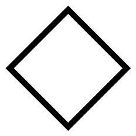
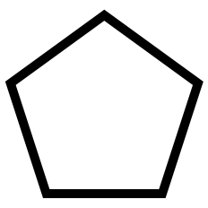
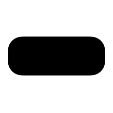

The Coronavirus Open Citations Dataset
The Coronavirus Open Citations Dataset curated by OpenCitations currently contains (as of 20 April 2020) information about 124,295 citations and about the 42,213 citing or cited articles involved in these citations. The full dataset, used for the visualization below, is stored in JSON format on Zenodo under a Creative Commons CC0 waiver, to enable anyone to use these data for any purpose:
Peroni, S. (2020). Coronavirus Open Citations Dataset. Zenodo. https://doi.org/10.5281/zenodo.3756802
Currently, this dataset suffers the major limitation that the data do not yet include articles published since the start of the COVID-19 pandemic, since they come primarily from COCI, the OpenCitations Index of Crossref open DOI-to-DOI citations. COCI is the most extensive dataset of open citation data released by OpenCitations, but its current version, published on 23 March 2020, only includes citations of articles published in Crossref up to the beginning of October 2019. In May OpenCitations will release a new version of COCI based on Crossref open references contained in the Crossref dump released in April, which will contain new citations involving papers about COVID-19. However, we thought it useful to publish the present dataset prior to that update. We will release new versions of this Coronavirus Open Citations Dataset on Zenodo following each future release of COCI (at monthly intervals) and also when significant volumes of new coronavirus citation data are uploaded by the scholarly community to CROCI, the Crowdsourced Citation Index.
Why and by (approximately) how much are open citations lacking
Even after future releases of COCI, we will still be missing many relevant citations coming from articles in journals whose publishers are not participating in the Initiative for Open Citations (I4OC) and opening their reference lists at Crossref, and those coming from preprints that also do not deposit their reference lists in Crossref.
C4: the Campaign to Crowsource Coronavirus Citations
You can help in improving this situation by sharing coronavirus citation data to which you have legal access in CROCI.
CROCI, the Crowdsourced Citation Index, is an OpenCitations Index containing citations deposited by individuals. We described the rationale and the main ideas behind the development of CROCI in an article published in the proceedings of the 17th International Conference on Scientometrics and Informetrics, held in Rome in September 2019, in which we described the procedure to follow for adding new citation data to the CROCI GitHub repository.
To add small or large amounts of coronavirus citation data, please follow the procedure described in the CROCI readme file.
The visualization
The following simple interactive visualization, developed just to show what might be possible using this dataset, shows the most relevant articles reporting investigations of coronaviruses in the past twenty years. These fall into three distinct periods characterised by three primary related diseases: SARS, MERS and COVID-19.
For the purpose of this initial visualization, we consider only citations where both the citing article and the cited article are on the topic of coronaviruses, and of these include only the articles that received, overall, at least ten citations per year since their publication date. The resulting dataset contains 560 citations between 93 articles.
Users can filter to select a subset of these citations, based on the family name of an author of the visualized articles.
The closer an article lies to the centre of display circle, the greater its number of links to the other articles displayed. Selecting an article by clicking on its symbol changes its margin to black. Its bibliographic metadata is then shown on the right while, within the display circle. Its citation links to all the articles in its reference list are shown by light blue lines and the symbols for these cited papers are shown with a bold light blue margin. The citations it receives from other publications are shown by light red lines and the symbols for these citing articles are shown with a bold light red margin.
Citations received
 citations ≤ 10
citations ≤ 10
 10 < citations ≤ 100
 100 < citations ≤ 500
> 500 citations
Publication dates
pre-SARS period (before 2003)
 SARS period (between 2003 and 2011)
SARS period (between 2003 and 2011)
MERS period (between 2012 and 2019)
COVID-19 period (since 2020)
Article and relations
 selected article
references of selected article
citations to selected article
Metadata of selected article
None selected
How it works
We developed a Python notebook to retrieve all the data used in the visualization. We obtained a list of relevant articles about coronaviruses using the Crossref API, by selecting all articles which contain the word 'coronavirus' either in the title or in the abstract (total: 9,087 articles, as of 12 April 2020). Then, we retrieved all the citations which involve these articles either as a citing entity or as a cited entity. We used the DOIs of these selected articles to retrieve citations involving the articles from all the OpenCitations Indexes by using the unifying REST API, resulting in the retrieval of 124,295 citations. Finally, we used the Crossref API again to retrieve bibliographic metadata (i.e. authors, year of publication, title, publication venue, and DOI) for the articles involved in all the citations retrieved (total: 42,213 articles, as of 12 April 2020). Where Crossref did not return bibliographic metadata for some articles, we completed these metadata by hand.
We created the visualization using Cytoscape JS and JQuery. We used Pure CSS to define the layout of the website. All the software, data, and additional material used for creating this website and the related data are available in our GitHub repository.
Contacts
For any comment, suggestion, improvement, critique, please do not hesitate to contact directly Silvio Peroni, who is responsible for the development of all the software and data for this visualization. You can reach him easily via email or Twitter.